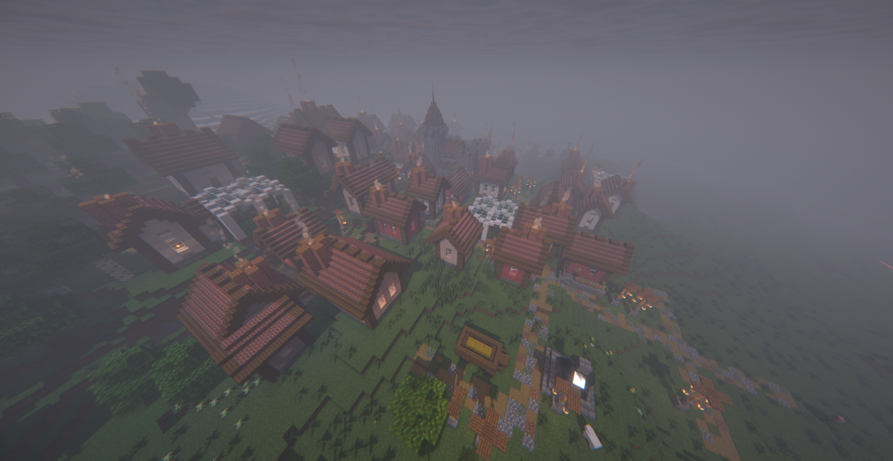

Steve running for President. Steve is Swedish-American who is 67 years old and is a moderate of the Democrat Party
Background

Family
Born and raised in a small town called Blockvannia by both parents and has a brother. Both
parents were farmers growing up and had a modest education
Culture
Came from a Swedish background where the cultural influence is moderate.
Experience
Steve's work experience is that of a simple farmer, living life on a farm was good. Steve's political experience
is of none as Steve is getting involved in politics.